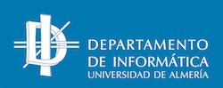

Resumen
Esta actividad se centra en el desarrollo de un sistema integral para gestionar una red de transporte y movilidad urbana, con un enfoque en la movilidad sostenible y la eficiencia en el transporte público. El sistema abarca diferentes aspectos de la movilidad urbana, incluyendo estaciones de bicicletas compartidas, rutas de autobuses, tráfico en tiempo real y pagos electrónicos. Los usuarios pueden consultar información sobre estaciones cercanas, optimizar rutas, recibir notificaciones sobre eventos de tráfico y realizar pagos de manera segura y eficiente. El sistema utiliza diferentes bases de datos NoSQL para manejar distintos aspectos:
-
MongoDB para gestionar estaciones y ubicaciones, aprovechando sus capacidades de indexación espacial
-
Redis para manejar la disponibilidad en tiempo real de las bicicletas
-
Neo4j para recomendar rutas óptimas y conexiones entre usuarios
-
Cassandra para registrar y analizar las transacciones de pago
El sistema proporciona APIs REST para cada componente, permitiendo registrar estaciones, consultar disponibilidad, recomendar rutas y gestionar pagos de manera eficiente y escalable.
-
Desarrollar un sistema de gestión integral para una red de transporte y movilidad urbana utilizando bases de datos NoSQL
-
Implementar la gestión de estaciones y ubicaciones con MongoDB, aprovechando sus capacidades de indexación espacial
-
Desarrollar un sistema de disponibilidad en tiempo real usando Redis y sus funcionalidades de caché y pub/sub
-
Crear un sistema de recomendación de rutas y conexiones sociales utilizando el modelo de grafos de Neo4j
-
Implementar un sistema de registro y análisis de transacciones de pago con Cassandra
-
Diseñar e implementar APIs REST para cada componente del sistema
-
Integrar diferentes tecnologías NoSQL para crear una solución completa de movilidad urbana
1. Gestión de estaciones y ubicaciones manejando información espacial con MongoDB
Una ciudad ha implementado un sistema de bicicletas compartidas con estaciones distribuidas en distintos puntos. Cada estación tiene un número de bicicletas disponibles y permite a los usuarios desbloquear una bicicleta y devolverla en cualquier estación de la red.
Hay que desarrollar una API REST que permita:
-
Registrar nuevas estaciones con información relevante.
-
Consultar estaciones cercanas a una ubicación dada.
-
Obtener detalles de una estación específica.
-
Actualizar el número de bicicletas disponibles en una estación.
Para ello, se utilizará MongoDB y su funcionalidad de indexación espacial para almacenar y consultar información espacial.
1.1. Diseño de la base de datos
Hay que crear una colección stations que almacene la información de las estaciones. Cada documento de la colección tendrá la siguiente estructura:
{
"_id": ObjectId("..."),
"name": "Estación Central",
"location": {
"type": "Point",
"coordinates": [-3.7038, 40.4168] # [longitud, latitud]
},
"total_slots": 20,
"available_bikes": 5,
"last_updated": ISODate("2025-03-19T10:00:00Z")
}Para almacenar y consultar información espacial, se utilizará el índice geoespacial de MongoDB. El índice se creará sobre el campo location de la colección stations.
db.stations.createIndex({ location: "2dsphere" })1.2. Desarrollo de la API REST
Se desarrollará una API REST con las siguientes rutas:
-
POST /stations: registra una nueva estación. -
GET /stations/near: consulta las estaciones cercanas a una ubicación dada. -
GET /stations/:id: obtiene los detalles de una estación específica. -
PUT /stations/:id: actualiza el número de bicicletas disponibles en una estación.
Para registrar una nueva estación, se usará este cuerpo de ejemplo:
{
"name": "Estación Norte",
"location": {
"coordinates": [-3.701, 40.420]
},
"total_slots": 15,
"available_bikes": 10
}La respuesta será el documento de la estación registrado, incluyendo su identificador:
{
"message": "Estación creada correctamente",
"station_id": "605c72eaf1a2c9b44c8b4567"
}La consulta asociada en MongoDB sería:
db.stations.insertOne(
{
name: "Estación Norte",
location: {
type: "Point",
coordinates: [-3.701, 40.420]
},
total_slots: 15,
available_bikes: 10,
last_updated: new Date()
}
)Para consultar las estaciones cercanas a una ubicación, las coordenadas de la ubicación se pasarán como parámetros de consulta: GET /stations/near?lat=40.4168&long=-3.7038. La respuesta será un array con las estaciones cercanas.
[
{
"name": "Estación Central",
"distance": 500,
"available_bikes": 5,
"total_slots": 20
},
{
"name": "Estación Norte",
"distance": 1200,
"available_bikes": 10,
"total_slots": 15
}
]La consulta asociada en MongoDB sería:
db.stations.find({
location: {
$near: {
$geometry: {
type: "Point",
coordinates: [-3.7038, 40.4168]
},
$maxDistance: 2000 # Distancia máxima en metros
}
}
})Para obtener los detalles de una estación específica, se usará la ruta GET /stations/:id, donde :id es el identificador de la estación. La respuesta será el documento de la estación.
{
"name": "Estación Central",
"location": {
"coordinates": [-3.7038, 40.4168]
},
"total_slots": 20,
"available_bikes": 5
}La consulta asociada en MongoDB sería:
db.stations.findOne({ _id: ObjectId("605c72eaf1a2c9b44c8b4567") })Para actualizar el número de bicicletas disponibles en una estación, se usará la ruta PUT /stations/:id, donde :id es el identificador de la estación. Se enviará el número de bicicletas disponibles en el cuerpo de la petición.
{
"available_bikes": 7
}La respuesta será el documento de la estación actualizado.
{
"message": "Estación actualizada correctamente",
}La consulta asociada en MongoDB sería:
db.stations.updateOne(
{ _id: ObjectId("605c72eaf1a2c9b44c8b4567") },
{ $set: { available_bikes: 3, last_updated: new Date() } }
);2. Gestión de disponibilidad en tiempo real con Redis
En un sistema de bicicletas compartidas, es crucial conocer en tiempo real la disponibilidad de bicicletas en cada estación. Dado que la información de disponibilidad cambia constantemente y se necesita una respuesta inmediata a las consultas, se utilizará Redis para:
-
Almacenar en caché la disponibilidad de bicicletas en cada estación.
-
Permitir consultas rápidas sobre la disponibilidad.
-
Usar publicación-suscripción para notificar cambios en la disponibilidad a los clientes interesados.
2.1. Diseño de la base de datos
Se utilizarán diferentes estructuras de Redis para modelar los datos:
-
Hash (
HSET) para almacenar la disponibilidad de cada estación.
HSET stations:123 available_bikes 5 total_slots 20-
List (
LPUSHyLTRIM) para almacenar un historial de cambios recientes en cada estación.
LPUSH history:stations:123 "2025-03-19T10:00:00Z: 5 bicicletas"
LTRIM history:stations:123 0 9 # Mantener solo los últimos 10 cambios-
Pub/Sub (
PUBLISH) para notificar cambios en la disponibilidad.
PUBLISH station_updates "Estación 123: 4 bicicletas disponibles"2.2. Desarrollo de la API REST
Se desarrollará una API REST con las siguientes rutas:
-
GET /stations/{station_id}/availability: consulta la disponibilidad de bicicletas en una estación. -
PUT /stations/{station_id}/availability: actualiza la disponibilidad de bicicletas en una estación y notifica a los clientes interesados. -
WS /stations/{station_id}/updates: establece una conexión WebSocket para recibir notificaciones en tiempo real sobre la disponibilidad de bicicletas. -
GET /stations/{station_id}/history: consulta el historial de cambios en la disponibilidad de bicicletas de una estación.
Para consultar la disponibilidad de bicicletas en una estación, se usará la ruta GET /stations/{station_id}/availability, donde {station_id} es el identificador de la estación. La respuesta será la disponibilidad actual.
{
"station_id": "123",
"available_bikes": 5,
"total_slots": 20
}La consulta asociada en Redis sería:
HGETALL stations:123Para actualizar la disponibilidad de bicicletas en una estación, se usará la ruta PUT /stations/{station_id}/availability, donde {station_id} es el identificador de la estación. Se enviará el número de bicicletas disponibles en el cuerpo de la petición.
{
"available_bikes": 7
}La respuesta será un mensaje de confirmación.
{
"message": "Disponibilidad actualizada correctamente",
}La consulta asociada en Redis sería:
HSET stations:123 available_bikes 7
LPUSH history:stations:123 "2025-03-19T10:05:00Z: 7 bicicletas"
LTRIM history:stations:123 0 9
PUBLISH station_updates "Estación 123: 7 bicicletas disponibles"Para establecer una conexión WebSocket y recibir notificaciones en tiempo real sobre la disponibilidad de bicicletas, se usará la ruta WS /stations/{station_id}/updates, donde {station_id} es el identificador de la estación. La conexión WebSocket permitirá recibir mensajes de actualización en tiempo real.
La respuesta de evento recibido sería:
{
"event": "availability_update",
"data": {
"station_id": "123",
"available_bikes": 7,
"total_slots": 20
}
}La consulta asociada en Redis sería:
SUBSCRIBE station_updatesPara consultar el historial de cambios en la disponibilidad de bicicletas de una estación, se usará la ruta GET /stations/{station_id}/history, donde {station_id} es el identificador de la estación. La respuesta será los últinos 10 cambios en la disponibilidad de la estación.
[
{
"timestamp": "2025-03-19T10:00:00Z",
"available_bikes": 5
},
{
"timestamp": "2025-03-19T10:05:00Z",
"available_bikes": 7
}
]La consulta asociada en Redis sería:
LRANGE history:stations:123 0 93. Recomendación de rutas óptimas y conexiones en una red de bicicletas compartidas con Neo4j
El sistema de bicicletas compartidas debe recomendar a los usuarios la mejor ruta entre dos estaciones, considerando la disponibilidad de bicicletas y las distancias entre estaciones. Además, se modelarán relaciones entre usuarios para ofrecer sugerencias de compañeros de viaje basadas en hábitos similares. Como casos de uso clave, se tendrían:
-
Recomendar la mejor ruta entre dos estaciones: Basado en la distancia y disponibilidad de bicicletas.
-
Sugerir estaciones cercanas con disponibilidad: Para usuarios que buscan una bicicleta y su estación está llena.
-
Sugerir compañeros de viaje: Identificando usuarios con rutas y horarios similares.
3.1. Diseño de la base de datos
Se representarán los datos con los siguientes nodos y relaciones:
-
Nodos
-
Station: Representa una estación de bicicletas.
{ "station_id": "123", "name": "Estación Central", "latitude": 40.4168, "longitude": -3.7038, "available_bikes": 5, "total_slots": 20 } -
User: Representa un usuario del sistema.
{ "user_id": "u456", "name": "Carlos", "home_station": "123" } -
Relaciones
-
CONNECTED_TO`: Conexiones entre estaciones con distancia en km.(:Station)-[:CONNECTED_TO]->(:Station) -
USES`: Relación entre un usuario y su estación más frecuente.(:User)-[:USES]->(:Station) -
RIDES_WITH`: Relación entre usuarios que han usado rutas similares en horarios cercanos.(:User)-[:RIDES_WITH]->(:User)
3.2. Desarrollo de la API REST
Se desarrollará una API REST con las siguientes rutas:
-
GET /routes?from={station_id}&to={station_id}: devuelve la mejor ruta en función de la distancia y disponibilidad de bicicletas. -
GET /stations/{station_id}/nearby: devuelve las estaciones cercanas con disponibilidad de bicicletas. -
GET /users/{user_id}/travelmates: devuelve sugerencias de compañeros de viaje basadas en hábitos similares.
Para obtener la mejor ruta entre dos estaciones, se usará la ruta GET /routes?from={station_id}&to={station_id}, donde {station_id} es el identificador de la estación de origen y destino. La respuesta será la mejor ruta en función de la distancia y disponibilidad de bicicletas.
{
"route": [
{
"station_id": "123",
"name": "Estación Central",
"distance": 0.0,
"available_bikes": 5,
"total_slots": 20
},
{
"station_id": "456",
"name": "Estación Norte",
"distance": 2.5,
"available_bikes": 10,
"total_slots": 15
}
],
"total_distance": 2.5
}La consulta asociada en Neo4j sería:
MATCH p = shortestPath((s1:Station {station_id: "123"})-[:CONNECTED_TO*]-(s2:Station {station_id: "456"}))
RETURN [n IN nodes(p) | {station_id: n.station_id, name: n.name, distance: n.distance, available_bikes: n.available_bikes, total_slots: n.total_slots}] AS route, reduce(s = 0.0, r IN relationships(p) | s + r.distance) AS total_distancePara obtener las estaciones cercanas con disponibilidad de bicicletas, se usará la ruta GET /stations/{station_id}/nearby, donde {station_id} es el identificador de la estación. La respuesta será un array con las estaciones cercanas y su disponibilidad.
[
{
"station_id": "456",
"name": "Estación Norte",
"distance": 2.5,
"available_bikes": 10,
"total_slots": 15
},
{
"station_id": "789",
"name": "Estación Sur",
"distance": 3.0,
"available_bikes": 8,
"total_slots": 12
}
]La consulta asociada en Neo4j sería:
MATCH (s1:Station {station_id: "123"})-[:CONNECTED_TO]-(s2:Station)
WHERE s2.available_bikes > 0
RETURN {station_id: s2.station_id, name: s2.name, distance: s2.distance, available_bikes: s2.available_bikes, total_slots: s2.total_slots} AS nearby_stationsPara obtener sugerencias de compañeros de viaje basadas en hábitos similares, se usará la ruta GET /users/{user_id}/travelmates, donde {user_id} es el identificador del usuario. La respuesta será un array con los usuarios que han usado rutas similares en horarios cercanos.
[
{
"user_id": "u789",
"name": "Laura",
"common_routes": 3
},
{
"user_id": "u234",
"name": "Pedro",
"common_routes": 2
}
]La consulta asociada en Neo4j sería:
MATCH (u1:User {user_id: "u456"})-[:RIDES_WITH]-(u2:User)
RETURN {user_id: u2.user_id, name: u2.name, common_routes: count(*)} AS travelmates4. Registro y análisis de transacciones en un sistema de pagos electrónicos con Cassandra
Un sistema de pagos electrónicos registra transacciones de usuarios al realizar pagos en comercios asociados. Cada transacción incluye información sobre el usuario, el comercio, el importe y la fecha. El sistema debe ser capaz de almacenar y analizar grandes volúmenes de transacciones para detectar patrones de uso, fraudes y tendencias de mercado. Como casos de uso clave, se tendrían:
-
Registrar un pago: Almacenar de manera eficiente cada transacción con detalles del emisor, receptor y cantidad.
-
Consultar pagos de un usuario: Recuperar el historial de pagos de un usuario de forma optimizada.
-
Consultar pagos en un intervalo de fechas: Obtener pagos en un rango de fechas para facilitar análisis financieros.
-
Consultar pagos por estado: Filtrar pagos por estado (pendiente, completado, fallido, etc.).
4.1. Diseño de la base de datos
Se utilizará Cassandra para almacenar las transacciones con un esquema diseñado para consultas rápidas sobre datos históricos. Se crearán las siguientes tablas:
-
transactions: Almacena las transacciones de manera eficiente.CREATE TABLE transactions ( transaction_id UUID, user_id UUID, recipient_id UUID, amount DECIMAL, currency TEXT, status TEXT, date TIMESTAMP, PRIMARY KEY (transaction_id) ); -
transactions_by_user: Almacena las transacciones de un usuario.CREATE TABLE transactions_by_user ( user_id UUID, transaction_id UUID, recipient_id UUID, amount DECIMAL, currency TEXT, status TEXT, date TIMESTAMP, PRIMARY KEY (user_id, date, transaction_id) WITH CLUSTERING ORDER BY (date DESC) ); -
transactions_by_status: Almacena las transacciones por estado.CREATE TABLE transactions_by_status ( status TEXT, transaction_id UUID, user_id UUID, recipient_id UUID, amount DECIMAL, currency TEXT, date TIMESTAMP, PRIMARY KEY (status, date, transaction_id) WITH CLUSTERING ORDER BY (date DESC) );
4.2. Desarrollo de la API REST
Se desarrollará una API REST con las siguientes rutas:
-
POST /transactions: registra un nuevo pago. -
GET /paymentos?user_id={user_id}: consulta los pagos de un usuario. -
GET /payments?user_id={user_id}&from={start_date}&to={end_date}: consulta los pagos de un usuario en un intervalo de fechas. -
GET /payments?status={status}: consulta los pagos por estado.
Para registrar un nuevo pago, se usará el cuerpo de la petición:
{
"user_id": "550e8400-e29b-41d4-a716-446655440000",
"recipient_id": "660e8400-e29b-41d4-a716-446655440001",
"amount": 100.50,
"currency": "EUR",
"status": "pending"
}La respuesta será el identificador de la transacción registrada.
{
"message": "Pago registrado correctamente",
"transaction_id": "550e8400-e29b-41d4-a716-446655440002"
}La consulta asociada en Cassandra sería:
INSERT INTO transactions (transaction_id, user_id, recipient_id, amount, currency, status, date)
VALUES (uuid(), ?, ?, ?, ?, ?, toTimestamp(now()));Para consultar los pagos de un usuario, se usará la ruta GET /payments?user_id={user_id}, donde {user_id} es el identificador del usuario. La respuesta será un array con los pagos del usuario.
[
{
"transaction_id": "550e8400-e29b-41d4-a716-446655440002",
"recipient_id": "660e8400-e29b-41d4-a716-446655440001",
"amount": 100.50,
"currency": "EUR",
"status": "pending",
"date": "2025-03-19T10:00:00Z"
}
]La consulta asociada en Cassandra sería:
SELECT *
FROM transactions_by_user
WHERE user_id = ?;Para consultar los pagos de un usuario en un intervalo de fechas, se usará la ruta GET /payments?user_id={user_id}&from={start_date}&to={end_date}, donde {user_id} es el identificador del usuario y {start_date} y {end_date} son las fechas de inicio y fin del intervalo. La respuesta será un array con los pagos del usuario en ese intervalo.
[
{
"transaction_id": "550e8400-e29b-41d4-a716-446655440002",
"recipient_id": "660e8400-e29b-41d4-a716-446655440001",
"amount": 100.50,
"currency": "EUR",
"status": "pending",
"date": "2025-03-19T10:00:00Z"
}
]La consulta asociada en Cassandra sería:
SELECT *
FROM transactions_by_user
WHERE user_id = ?
AND date >= ?
AND date <= ?;Para consultar los pagos por estado, se usará la ruta GET /payments?status={status}, donde {status} es el estado de los pagos. La respuesta será un array con los pagos en ese estado.
[
{
"transaction_id": "550e8400-e29b-41d4-a716-446655440002",
"user_id": "550e8400-e29b-41d4-a716-446655440000",
"recipient_id": "660e8400-e29b-41d4-a716-446655440001",
"amount": 100.50,
"currency": "EUR",
"date": "2025-03-19T10:00:00Z"
}
]La consulta asociada en Cassandra sería:
SELECT *
FROM transactions_by_status
WHERE status = ?;5. Conclusiones
Este caso de estudio demuestra la efectividad de utilizar diferentes bases de datos NoSQL para resolver distintos aspectos de un sistema de movilidad urbana. MongoDB resulta ideal para gestionar datos geoespaciales y realizar consultas de proximidad gracias a sus índices 2dsphere. Redis ofrece excelente rendimiento para datos en tiempo real y notificaciones mediante pub/sub. Neo4j facilita el análisis de rutas y relaciones entre usuarios con su modelo basado en grafos. Cassandra permite un registro escalable de transacciones con consultas optimizadas por patrones de acceso. La combinación de estas tecnologías permite construir un sistema robusto y escalable que responde a las necesidades de una ciudad moderna en términos de movilidad y transporte.